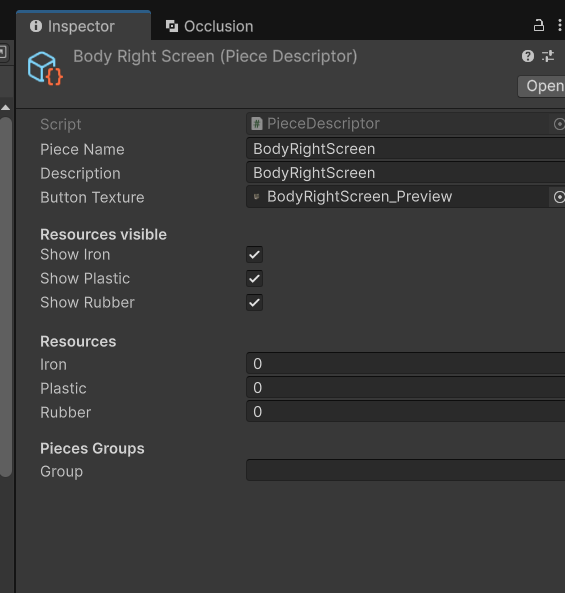
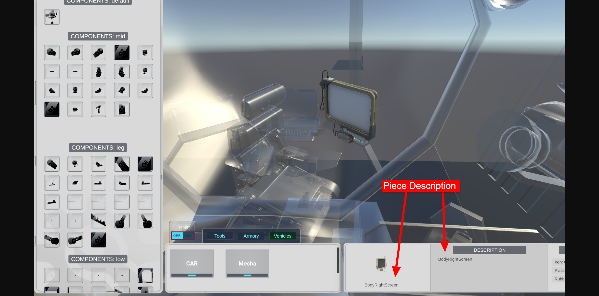
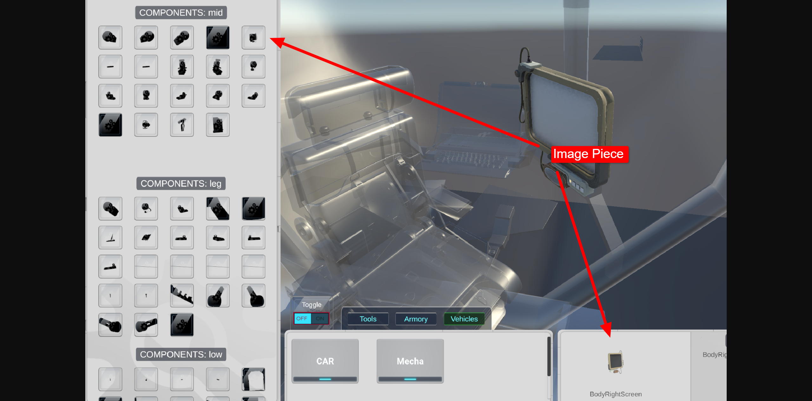
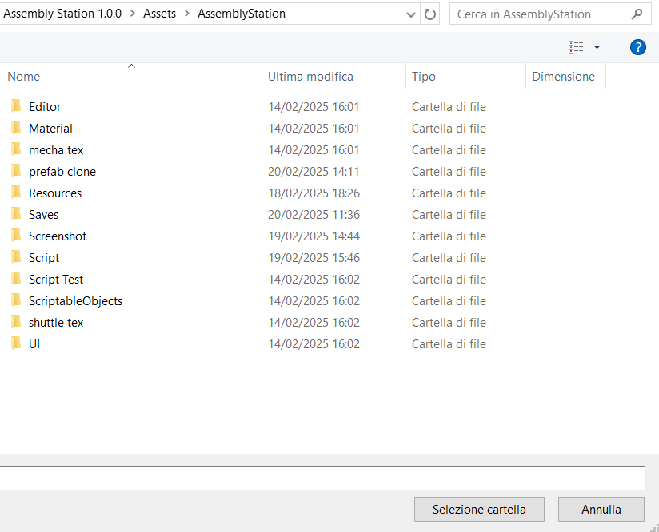
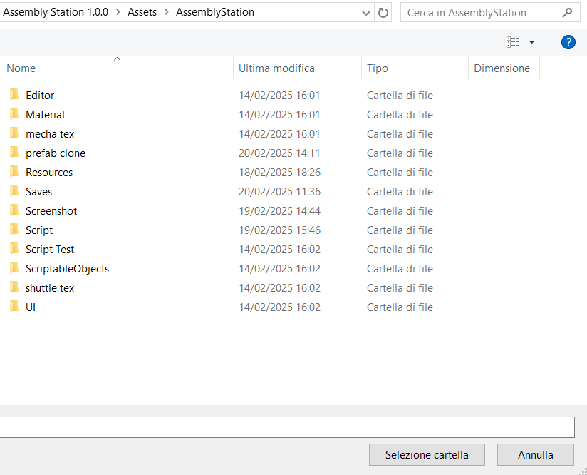

Una volta aggiunti tutti i prefab che si desidera e spostati i pivot, bisognerà aggiungere a ogni figlio del gameobject che contiene Meshrander o SkinnedMeshRenderer una descrizione, e un'immagine, mentre al genitore un titolo.
Basterà cliccare sul pulsante(in alto) Tools > Add Name and Descriptions To
Prefabselezionare la cartella prefab clone e verrà aggiunto automaticamente una descrizione, un nome e un'immagine a ogni figlio del prefab.
Non inserire nulla all'interno del campo
Fare doppio click con il mouse su Piece Description o Preview Description si andra direttamente al pezzo corrispondente. nella cartella Assets > AssemblyStation > ScriptableObjects
Se si seleziona Preview Description si aprirà una finestra con tutti gli scriptable object creati per ogni prefab, qui si può inserire il nome del prefab e la descrizione.
Mentre se si seleziona Piece Description si aprirà una finestra con tutti gli scriptable object creati per ogni figlio del prefab, qui si può inserire il nome del figlio e la descrizione.


Questo è quello che sarà visualizzato nel gioco per la Preview del modello.
Questo è quello che sarà visualizzato nel gioco per la Preview del pezzo.

Ogni "pezzo" avrà un immagine associata che verrà visualizzata nella preview.
L'immagine viene generata automaticamente quando andiamo a premere il pulsante
Tools >
Add Name and Descriptions To Prefab
Se si desidera inserire un'immagine personale basterà andare nella Piece Description e selezionare l'immagine desiderata sostituendola con quella generata dal sistema.
Funzionamento (Modalità Editor): al click su Add Name and Descriptions To Prefab viene generata una camera in posizione frontale al pezzo e viene scattata una foto, questa foto viene salvata nella cartella
Assets > AssemblyStation > Screenshot > e viene associata al figlio. Per ovvie ragioni l'immagine potrebbe essere compromessa dalla grandezza del pezzo e per un'angolazione non corretta. Per questo si consiglia di
inserire un'immagine personalizzata se si verifica questo problema.




 
